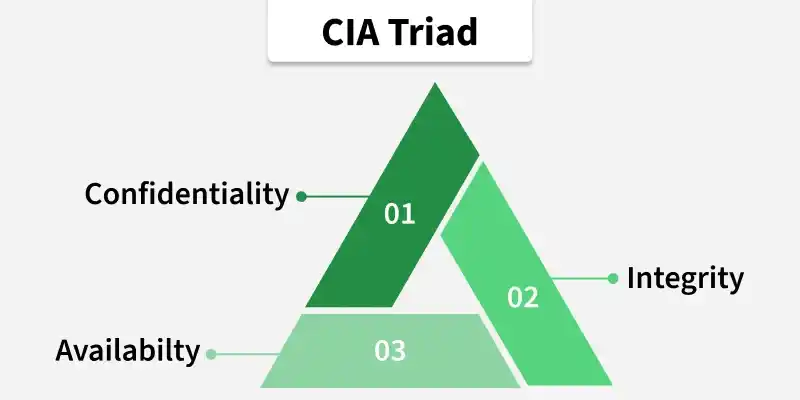
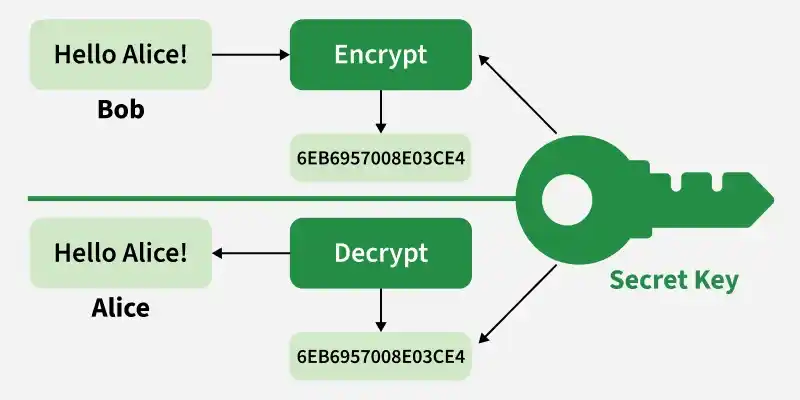
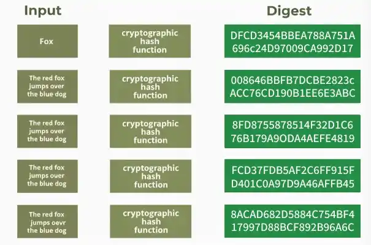
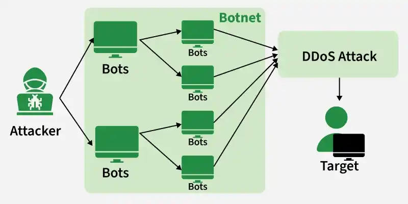

1. Introduction to Information Security
1.1 Information Security (InfoSec)
Information Security (InfoSec) is the practice of protecting information and information systems from unauthorized access, use, disclosure, disruption, modification, or destruction. It is an all-encompassing discipline designed to ensure business continuity, minimize financial or reputational damage, and protect critical assets regardless of the format the data takes (whether it is electronic, print, or even spoken word).
In a modern enterprise, InfoSec is not merely a technical concern handled by the IT department; it is a fundamental pillar of corporate governance. It bridges the gap between organizational policy, human behavior, and technical controls.
The Core Objective
To manage and mitigate risk. Because absolute security is mathematically and practically impossible, InfoSec focuses on implementing a layered defense mechanism to bring risk down to an acceptable level (known as residual risk).
Scope
It spans across physical security (e.g., locking server rooms), administrative security (e.g., employee training and policies), and technical security (e.g., firewalls and encryption).
1.1b Why Information Security?
Organizations invest in Information Security because information assets face threats ranging from theft and espionage to cybercrime. The discipline exists to reduce harm to people, operations, and trust—not to eliminate every possible risk (see residual risk in §1.1).
Key reasons organizations adopt InfoSec programs include:
- Protecting sensitive information: Personal, financial, trade-secret, and government or military data must stay inaccessible to unauthorized parties—whether stored digitally or on paper.
- Mitigating risk: Controls such as firewalls, encryption, and incident response reduce the likelihood and impact of breaches, denial-of-service attacks, and other malicious activity.
- Compliance with regulations: Laws and industry standards (e.g., GDPR, HIPAA, PCI-DSS) require specific safeguards; non-compliance can lead to fines and legal liability (see §1.8).
- Protecting reputation: Public security incidents erode customer trust and can cause lost business; strong InfoSec limits exposure and supports recovery communications.
- Ensuring business continuity: Availability controls, backups, and disaster recovery keep critical systems and data accessible when incidents occur.
Effective programs also require ongoing monitoring, assessment, and adaptation as threats and technology evolve—security is a continuous process, not a one-time project.
1.2 Information Security Goals
The CIA Triad is a fundamental framework in information security used to protect data and maintain secure, reliable systems. It guides policies so that information remains confidential, accurate, and accessible to authorized users.
The CIA Triad:
- Defines the core principles of Confidentiality, Integrity, and Availability
- Provides a framework for protecting sensitive and important information
- Guides organizations in implementing effective cybersecurity strategies
Every security control implemented in an organization can be mapped back to one or more of these pillars. Deeper mechanics appear in §1.6.

1. Confidentiality
Confidentiality ensures that sensitive data is accessible only to authorized individuals or systems. Its purpose is to prevent unauthorized viewing, access, or misuse of private information—whether intentional (e.g., hacking) or accidental (e.g., sending an email to the wrong recipient).
Risks to Confidentiality
- Unauthorized access: Attackers exploit vulnerabilities to reach protected data.
- Weak encryption: Outdated or weak algorithms (e.g., DES) can be broken, exposing sensitive information.
- Insider threats: Employees or trusted users may leak or accidentally expose confidential data.
Additional threats include snooping, social engineering, packet sniffing, data leaks, and shoulder surfing.
How to Ensure Confidentiality
- Encryption: Use strong methods such as AES or RSA for data at rest and in transit; avoid outdated algorithms like DES.
- VPN: A Virtual Private Network creates an encrypted tunnel for internet communication, reducing interception risk.
- Access controls: Strict authentication and authorization (e.g., MFA, ACLs, role-based access) limit data to authorized users only.
2. Integrity
Integrity ensures that data remains accurate, authentic, and unaltered during storage or transmission. Any unauthorized modification or corruption compromises the reliability of data.
Risks to Integrity
- Data tampering: Attackers may intentionally alter or corrupt data for malicious purposes.
- Malware and ransomware: Malicious software can modify, encrypt, or destroy data and disrupt systems.
Additional threats include Man-in-the-Middle (MitM) attacks, unauthorized file edits, database tampering, and hardware bit rot.
How Integrity Is Ensured
- Hash functions: Generate unique digests for data; common families include MD5 (128-bit) and SHA-1, SHA-2, and SHA-3 (varying output lengths). See §1.6 for the verification workflow.
- Digital signatures: Prove that a message or file came from a specific sender and was not altered.
- Version control and backups: Restore data to a known good state after unauthorized changes.
3. Availability
Availability ensures that systems, networks, and data are accessible to authorized users whenever needed. A system that is completely secure but inaccessible to the business is useless.
Risks to Availability
- DoS and DDoS attacks: Denial of Service (DoS) or Distributed Denial of Service (DDoS) attacks flood network resources with excessive traffic, making services unavailable to legitimate users.
- Impact: Such attacks can cause major service disruptions, downtime, and financial losses.
Additional threats include hardware failures, power outages, and ransomware locking systems.
How to Ensure Availability
Network and system administrators should focus on:
- Hardware maintenance: Regularly maintain and upgrade hardware to prevent failures.
- Regular upgrades: Keep systems and software updated for performance and security.
- Failover plans: If one component fails, another takes over to minimize downtime (e.g., RAID, redundant power, secondary data centers).
- Preventing bottlenecks: Monitor and manage traffic to avoid congestion; use load balancing across servers.
- Disaster recovery and backups: Test restoration processes so operations can resume quickly after an incident.
1.6 Deep Dive: Basic Notions of CIA
Expands the CIA overview from §1.2 Information Security Goals with mechanics, examples, and failure modes.
To truly understand Information Security, we must look closely at the core mechanics of the CIA Triad (Confidentiality, Integrity, and Availability). These are not just abstract goals; they are operational requirements that dictate how data is handled at every stage of its lifecycle.
Let's break down each notion deeply, exploring their specific components, real-world examples, and how they fail.
1. Confidentiality (The Notion of Secrecy)
Confidentiality means ensuring that data is hidden from eyes that shouldn't see it. In a digital ecosystem, this applies to data stored on a disk, data moving across cables, or data actively being processed in memory.
Core Components & Tactics
Symmetric vs. Asymmetric Cryptography:
- Symmetric Encryption: Uses a single, shared secret key to both lock (encrypt) and unlock (decrypt) data (e.g., AES-256). It is highly efficient for large datasets (Data at Rest).
- Asymmetric Encryption: Uses a mathematically linked pair of keys—a Public Key (shared with everyone for encryption) and a Private Key (kept secret by the owner for decryption) (e.g., RSA, ECC). This solves the problem of securely exchanging keys over insecure channels.

-
Data Masking & Obfuscation: Replacing sensitive data structural elements with dummy data
(e.g., masking credit card numbers like
**** **** **** 1234in logs or database views used by developers). - Steganography: The practice of concealing a file, message, image, or video within another file. Unlike encryption, which makes data unreadable, steganography hides the very fact that communication is taking place.
Real-World Example
When a user accesses an online banking portal, the browser establishes an HTTPS connection. This relies on TLS (Transport Layer Security) to encrypt all traffic between the user's browser and the bank's servers. If an attacker on the same local Wi-Fi network intercepts the network packets, they will only see unreadable gibberish, successfully preserving confidentiality.
How It Fails (Breach)
A confidentiality breach occurs when an unauthorized party gains access to restricted data.
Scenario: An employee falls victim to a phishing email and enters their credentials into a cloned login page. The attacker uses these credentials to download a database containing sensitive customer records.
2. Integrity (The Notion of Trustworthiness)
Integrity means ensuring that data can be trusted. It must be accurate, complete, and exactly what the sender or creator intended it to be. If data changes unexpectedly without authorization, its integrity is dead.
Core Components & Tactics
- Cryptographic Hashing Functions: A hash function takes an input of any size and transforms it into a fixed-size digest. Common examples include MD5 (128-bit output) and the SHA family (SHA-1, SHA-2 such as SHA-256, and SHA-3 with varying bit lengths). Good hashing functions exhibit an avalanche effect—a small change in input produces a completely different digest. Hashing is one-way; you cannot reverse a hash to recover the original data.
- Message Authentication Codes (MAC / HMAC): A mechanism that combines a cryptographic hash function with a secret key. It provides assurance that the data has not been modified and confirms that the person who generated the hash possesses the correct secret key.
-
Digital Signatures: A cryptographic value calculated using the sender's Private Key and a hash
of the data. Anyone can use the sender's Public Key to verify the signature. This achieves two critical things:
- Integrity: Proves the data wasn't changed.
- Non-Repudiation: The sender cannot deny sending it, as only they possess the private key.
Working of Hash Functions
- Host A sends data: Host A computes a hash value (H1) from the data using a hash function.
- Attach hash: H1 is sent along with the data to the recipient.
- Host B verifies: Host B computes a new hash (H2) from the received data.
- Compare: If H1 = H2, the data is unchanged (integrity preserved). If H1 ≠ H2, the data was altered or corrupted.

Note: Even a small change in the input (such as altering one word or character) will completely change the resulting hash.
Real-World Example
When downloading a Linux operating system ISO image or an open-source software package, developers often see a string of text next to the download button labeled "SHA-256 Checksum". Once downloaded, the user can run a local hashing tool on the file:
sha256sum ubuntu-desktop.isoIf the output string matches the hash listed on the website, the user is guaranteed that the file was not corrupted during download and was not modified by a malicious middleman.
How It Fails (Breach)
An integrity breach occurs when data is modified by an unauthorized entity or corrupted by system faults.
Scenario (Man-in-the-Middle): An attacker intercepts a network packet containing an e-commerce bank transfer request. They alter the destination account number inside the packet before letting it proceed to the processing gateway. If the system lacks integrity checks, the funds go to the attacker's account.
3. Availability (The Notion of Accessibility)
Availability means that systems, networks, and data must be up and running whenever authorized users need them. Security is pointless if legitimate users cannot do their work because the system is offline.
Core Components & Tactics
Redundancy & High Availability (HA): Removing single points of failure by duplicating critical infrastructure components.
- RAID (Redundant Array of Independent Disks): Combining multiple physical hard drives so that if one drive dies, data is not lost and the system keeps running.
- Load Balancing: Deploying reverse proxies to distribute incoming web traffic evenly across an array of web servers, ensuring no single server becomes overwhelmed.
- Backups & Disaster Recovery (DR): Implementing strict backup rotation schemes (like the 3-2-1 rule: 3 copies of data, on 2 different types of media, with 1 copy stored completely off-site/cloud).
- Capacity Planning & Bandwidth Throttling: Monitoring usage trends to provision enough computational power and network pipes to handle sudden, massive spikes in user traffic.
Real-World Example
Enterprise cloud providers host web applications across multiple geographically separated data centers called Availability Zones (AZs). If an earthquake or power grid failure takes down an entire data center in Zone A, automated routing protocols immediately shift all user traffic to Zone B within seconds. The end-user experiences zero downtime.
How It Fails (Breach)
An availability breach occurs when systems become unusable or completely inaccessible to legitimate users.

Scenario (DDoS Attack): A botnet consisting of hundreds of thousands of compromised IoT devices floods a company's web server with millions of fake, junk connection requests simultaneously. The server exhausts its CPU and memory resources trying to process the fake traffic, causing it to crash and deny access to actual, paying customers.
1.3 Information Security Principles
To operationalize the CIA Triad successfully, security architects rely on fundamental design principles. These principles guide the creation of secure systems and mitigate human error.
1. Principle of Least Privilege (PoLP)
Users, processes, and systems should only be granted the minimum levels of access—or authorizations—necessary to perform their specific tasks.
Example: A WordPress content writer should only have an "Author" or "Editor" role, never an "Administrator" role. If their account is compromised, the attacker's blast radius is limited.
2. Defense in Depth (Layered Security)
This principle dictates that security controls should be layered throughout an information system so that if one defensive layer fails, subsequent layers are in place to stop the attacker.
Example: To protect database data, an enterprise doesn't just rely on a network firewall. They implement network firewalls → host-based intrusion detection systems → strict OS access permissions → database-level authentication → encryption of the data at rest.
3. Separation of Duties (SoD)
Critical tasks should be divided among multiple people to prevent fraud or major errors. No single individual should have total control over an entire critical process.
Example: The software developer who writes code should not be the same person who approves and deploys that code to the production server.
4. Need to Know
Even if a user has a high security clearance level, they should not have access to data unless they explicitly require that information to execute a current, specific task. While Least Privilege refers to technical rights and permissions, Need to Know typically refers to the data itself.
5. Fail-Safe Defaults (Implicit Deny)
When a system or rule fails, it should default to the most secure state possible. If an access rule is not explicitly defined to allow an action, the system must automatically deny it.
Example: A network firewall, by default, blocks all incoming traffic unless an administrator explicitly creates a rule to open a specific port.
6. Economy of Mechanism (Keep Security Simple)
The security mechanisms themselves should be as simple and small as possible. Complex code, intricate configurations, and confusing policies lead to human error, hidden vulnerabilities, and gaps that are difficult to audit.
1.4 Relationship: InfoSec vs. Cyber Security vs. Network Security
These terms are often used interchangeably in casual conversation, but they represent distinct, overlapping layers of a comprehensive security taxonomy. They are best understood as nested scopes.
| Attribute | Information Security (InfoSec) | Cyber Security | Network Security |
|---|---|---|---|
| Definition | The overarching umbrella that protects all data, regardless of its form (digital, physical, or analog). | The practice of protecting assets that are connected to or reside within the digital/cyber realm. | A subset of cybersecurity focused on protecting network infrastructure and data in transit. |
| Primary Focus | Data integrity, classification, policy, compliance, and physical document security. | Cyber-attacks, malware, cloud infrastructure, web applications, and digital identities. | Firewalls, routers, switches, protocols, traffic encryption, and perimeter defense. |
| Example Scenario | Creating a policy on how physical paper contracts are shredded AND how databases are encrypted. | Mitigating a ransomware attack spreading across corporate laptops and cloud storage. | Configuring a VPN or an Intrusion Prevention System (IPS) to block malicious external traffic. |
1.4.1 Types of Data
To apply these security domains effectively, data must be classified based on its sensitivity and format. Data exists in three primary states, and it falls into distinct organizational categories.
The Three States of Data
| State | Description | Primary Protection |
|---|---|---|
| Data at Rest | Data stored persistently on physical or digital media (e.g., hard drives, SSDs, backup tapes, cloud storage). | AES encryption, physical access controls. |
| Data in Transit (Data in Motion) | Data traversing a network between systems (e.g., an HTTP request, an email traveling over the internet). | Transport Layer Security (TLS), Virtual Private Networks (VPNs). |
| Data in Use | Data currently loaded into system RAM, CPU cache, or registers being actively processed by an application. | Secure memory isolation, confidential computing enclaves. |
Organizational Classification of Data
- Public Data: Information that can be freely shared without risk to the organization (e.g., marketing brochures, public documentation).
- Internal-Only Data: Information intended for employees that wouldn't devastate the company if leaked but should remain private (e.g., internal memos, company directory).
- Confidential / Sensitive Data: Proprietary data that, if exposed, would cause financial or legal harm (e.g., source code, intellectual property, business strategies).
- Regulated / Restricted Data: Data strictly governed by legal frameworks (e.g., PII — Personally Identifiable Information like national IDs, PHI — Protected Health Information, or PCI-DSS — Credit Card Data). Exposure leads to massive regulatory fines and legal consequences.
1.5 Elements of Information Security
An effective Information Security program is built upon five foundational operational elements. These elements ensure that an organization can actively defend its perimeter, validate identities, track actions, and maintain accountability.
1. Confidentiality & Privacy Controls
The systematic application of tools (such as masking, tokenization, and encryption algorithms) to guarantee that private data remains unreadable to anyone without the explicit cryptographic keys or access rights.
2. Authentication (AuthN)
The process of verifying the claimed identity of a user, device, or system. It answers the question: "Who are you?"
The Three Factors of Authentication:
- Something you know: Passwords, PINs.
- Something you have: Hardware tokens, authenticator apps, smart cards.
- Something you are: Biometrics (fingerprints, facial recognition, retina scans).
Authenticity (closely related to authentication) means verifying that users are who they claim to be and that data or messages originate from a trusted source over a valid channel—so recipients can treat inputs as genuine, not forged.
3. Authorization (AuthZ)
The process of granting or denying specific privileges to an authenticated entity. It answers the question: "What are you allowed to do?" Once a user proves who they are via authentication, authorization checks the access matrix to see if they can read, write, or execute a specific resource.
4. Accountability & Auditing
The mechanisms that track system activity and link actions directly to a specific user or system account. This ensures that if a security incident occurs, investigators can trace exactly who initiated the action, when it happened, and what assets were affected.
Logs: Systems must maintain immutable, tamper-resistant log files recording successful and failed login attempts, file modifications, and administrative changes.
5. Non-Repudiation
A state where a sender or actor cannot deny having sent a message or performed an action, and the recipient cannot deny receiving it. This is achieved through cryptographic mechanisms such as digital signatures and public-key infrastructure (PKI), where a private key uniquely binds the action to an individual or system.
1.7 Types of Information Security
Beyond the broad relationship between InfoSec, cybersecurity, and network security (§1.4), practitioners often organize controls into operational domains. Each domain addresses different assets and attack surfaces; together they protect data across networks, applications, devices, and cloud platforms.
| Type | Focus | Example controls |
|---|---|---|
| Network Security | Computer networks, traffic in transit, perimeter defense | Firewalls, Intrusion Detection/Prevention Systems (IDS/IPS), VPNs blocking malicious inbound traffic |
| Application Security | Software flaws, secure development, web-facing services | Code reviews, security patches, Web Application Firewalls (WAFs) filtering HTTP traffic |
| Data Security | Data at rest and in transit; confidentiality and integrity of stored information | Encryption, data masking; encrypted email unreadable without the decryption key |
| Endpoint Security | Laptops, smartphones, tablets, and other user devices | Antivirus, Endpoint Detection and Response (EDR) scanning and removing malware on a laptop |
| Cloud Security | Data and applications hosted in cloud environments | Secure cloud configuration, Identity and Access Management (IAM), multi-factor authentication (MFA) |
InfoSec also spans research and practice areas such as cryptography, mobile computing, cyber forensics, and security of online social platforms—reflecting how broadly “information” appears in modern systems.
1.8 ISMS & Key Regulations
ISMS = how the organization manages security (ISO 27001 framework). GDPR = EU law on personal data privacy and individual rights — compliance often requires an ISMS but they are not the same thing.
Information Security Management System (ISMS)
An Information Security Management System (ISMS) is a structured framework for protecting an organization's information assets. It defines policies, procedures, and controls to manage risks such as unauthorized access, data breaches, and cyberattacks.
Many organizations align their ISMS with international standards such as ISO/IEC 27001, which provides a systematic approach to identifying risks, implementing safeguards, and continuously improving security practices through regular review and audit.
General Data Protection Regulation (GDPR)
The General Data Protection Regulation (GDPR) is a comprehensive European Union privacy law, effective since 25 May 2018. It governs how organizations collect, use, store, and share personal data about individuals in the EU/EEA.
- Grants individuals rights to access, correct, and request deletion of their data.
- Requires transparency about data practices and implementation of appropriate security measures.
- Imposes significant fines for serious non-compliance, reinforcing accountability for privacy protection.
GDPR is one example of regulated data described in §1.4.1; other frameworks (HIPAA for health data, PCI-DSS for payment cards) apply in different sectors and regions.
1.9 Challenges & Issues in Information Security
Even well-funded programs face persistent challenges. Understanding these issues helps prioritize controls and realistic expectations—no single tool eliminates all risk.
- Cyber threats: Malware, phishing, and ransomware continue to grow in sophistication, targeting both systems and the humans who use them.
- Human error: Lost devices, weak passwords, and clicking malicious links remain common causes of incidents.
- Insider threats: Employees or contractors with legitimate access may cause harm intentionally or accidentally.
- Legacy systems: Older platforms may lack modern security features and are harder to patch or replace.
- Complexity: Large, interconnected environments make it difficult to map data flows and apply consistent controls everywhere.
- Mobile and IoT devices: Phones, sensors, and smart devices expand the attack surface; many ship with weak defaults or infrequent updates.
- Third-party integration: Vendors and partners can introduce vulnerabilities outside the organization's direct control.
- Data privacy: Stricter privacy laws increase obligations to protect personal and sensitive data (see §1.8).
- Globalization: Data stored or processed across borders must meet varying legal and security requirements, complicating governance.
Threat → primary CIA pillar → control direction
| Challenge | Primary pillar | Control direction |
|---|---|---|
| Cyber threats / phishing | C, I, A | EDR, training, patching |
| Human error | C, I | MFA, DLP, least privilege |
| Insider threat | C, I | Logging, separation of duty |
| Legacy systems | I, A | Segmentation, replacement plan |
| Complexity / third parties | C, I | Asset inventory, vendor risk review |
| Mobile / IoT | C, A | MDM, network segmentation |
| Data privacy / globalization | C | ISMS, GDPR-style governance |
1.10 History & Classification Trade-offs
1.10.1 Historical context
Formal protection of sensitive information is not new. During the First World War, militaries developed multi-tier classification schemes to label how sensitive documents were and who could access them. In the Second World War, these systems were aligned more formally across allied operations.
Cryptography played a decisive role: Alan Turing and colleagues at Bletchley Park successfully decrypted traffic from the German Enigma machine, which encrypted military communications. That episode illustrates how breaking confidentiality of an adversary's information can change the course of conflict—and why protecting one's own information remains essential.
1.10.2 Classification: advantages and disadvantages
Labeling data by sensitivity (see §1.4.1) is a cornerstone of many InfoSec programs. Done well, it directs the right level of protection to the right assets; done poorly, it creates cost and false confidence.
| Advantages | Disadvantages |
|---|---|
|
|
- InfoSec protects information in any form from unauthorized access, change, or loss.
- CIA: confidentiality (secrecy), integrity (trustworthiness), availability (access when needed).
- Principles and elements guide how organizations design layered defenses.
- Five domain types: network, app, cloud, endpoint, and data security.
- ISMS (e.g. ISO 27001) structures risk management; GDPR governs EU personal data.